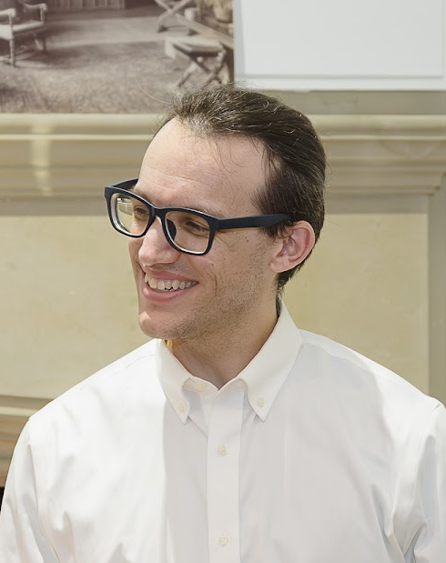

|  |
Calvin Deutschbein they/them Assistant Professor of Computer Science, Willamette University School of Computing & Information Sciences |
|
Professor Calvin Deutschbein is computer security and systems researcher and educator. They completed their Ph.D. in Computer Science at University of North Carolina at Chapel Hill under the direction of Professor Cynthia Sturton. Their research focuses on computer security, especially at the level of hardware design, and in the usage of data mining and design specification to achieve security goals. Prior to joining Willamette, Calvin has years of teaching experience at the University of Chicago, the University of North Carolina at Chapel Hill, and Elon University, the number one ranked US News and World Report institution for undergraduate education. Calvin is especially passionate about expanding access to computing education and career and job placements for students. Calvin's research on hardware security has been well received by industry partners, including invited talks for Intel Corporation, the Semiconductor Research Corporation, and Cycuity (formerly Tortuga Logic). Within the research community, they have given invited talks at hardware security oriented venues such as SEC-RISCV and clean-slate. |